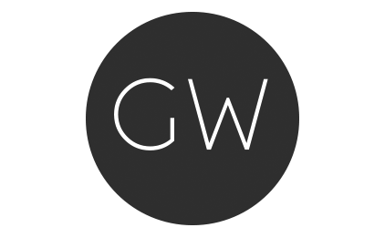

I'm glad that you visited my site where you can get to know me and my work. My name is GR Wadhwa, I am a designer, Illustrator, Art Director and Front-end Developer. I develop creative visual communication designs in multiple media platforms—print, web, video, mobile, and social. I work with stakeholders to extract business goals and design objectives. The business goals and objectives are translated into visually attractive and informative materials aligned with the brand identity. I also have experience with product design, photography, visual merchandising and packaging. I work independently and with teams to manage time across multiple projects and tasks in a deadline-driven environment.
I love to travel. My dream is to have all the pages of my passport stamped before it expires!
The School of the Art Institute of Chicago; Visual Communications
